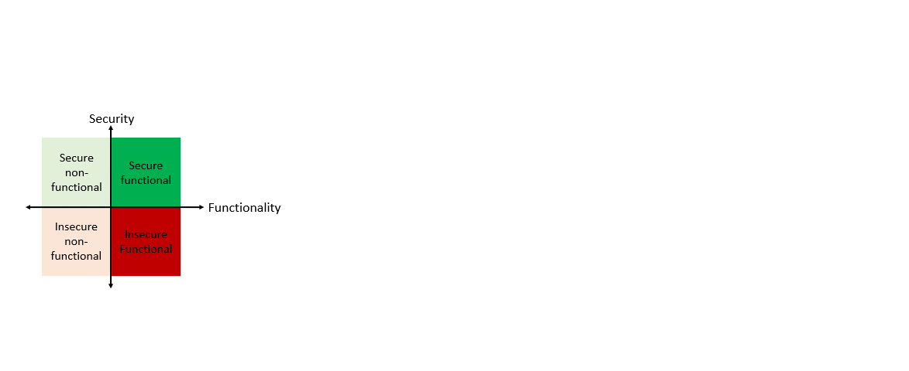
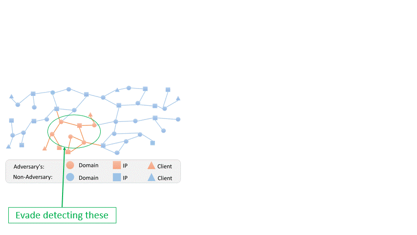
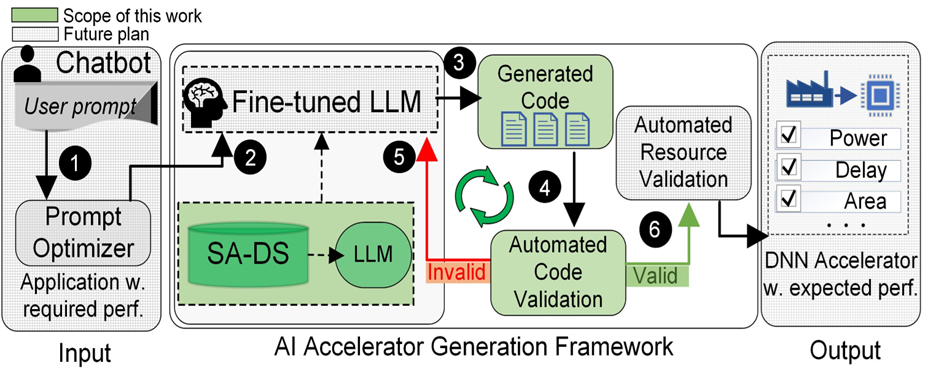
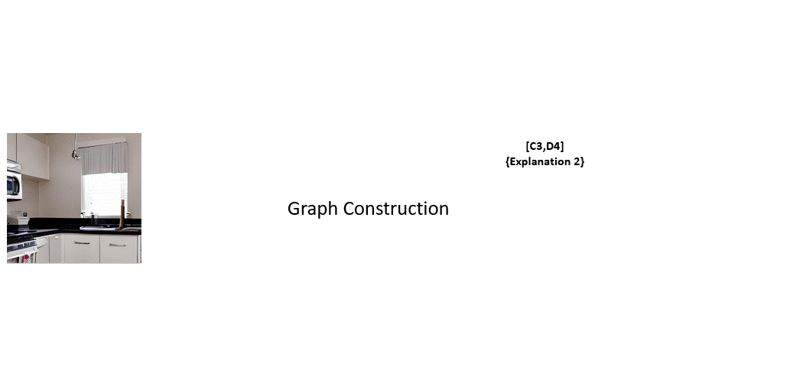
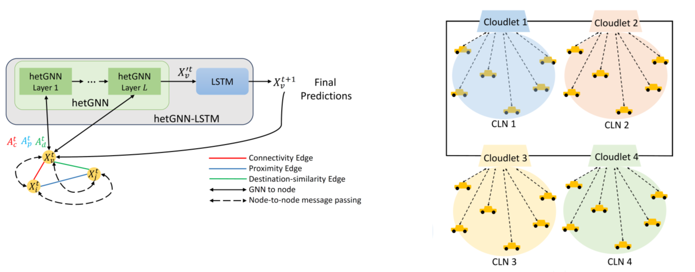

Problem: LLMs tend to generate functional but insecure code.
Objective: Optimize prompts to generate secure functional code with LLMs.
Key Contributions:
Methodology: gGAN fixes code vulnerabilities, LLM improves prompts, and iterative loop for optimizing code security.
Key Results: Enhances security while maintaining functionality, reduces operational time and costs significantly, prompts work across languages and LLMs, reduces vulnerabilities in generated code.
Problem: Need for a new adversarial attack on multiple instances to evade malicious domain detection.
Objective: Develop MintA, an attack that evades GNN-based malicious domain detection by optimizing multiple domain manipulations.
Key Contributions:
Methodology: Construct a surrogate model using black-box access, optimize node and edge perturbations to maximize evasiveness, implement perturbations through domain and IP modifications.
Results: Achieves over 80% success rate in evading detection, bypasses outlier detection and graph purification defenses.
[2] M. Nazzal, I. Khalil, A. Khreishah, N. Phan, & Y. Ma, “Multi-Instance Adversarial Attack on GNN-Based Malicious Domain Detection,” in 2024 IEEE Symposium on Security and Privacy (SP), May 2024.
Problem: Lack of specialized datasets for AI-driven accelerator design.
Objective: Introduce SA-DS for LLM-based DNN hardware design.
Key Contributions:
Methodology: Data from Gemmini in Chisel, supports LLM fine-tuning and multi-shot learning, quality check using Verilator.
Results: 100% pass rate with multi-shot learning, fewer revisions, better workflow.
[3] D. Vungarala*, M. Nazzal*, M. Morsali, C. Zhang, A. Ghosh, A. Khreishah, and S. Angizi, “SA-DS: A Dataset for Large Language Model-Driven AI Accelerator Design Generation,” IEEE International Symposium on Circuits and Systems (ISCAS) 2025. [Accepted].
[4] arXiv preprint: arXiv:2404.10875. https://doi.org/10.48550/arXiv.2404.10875
Problem: Growing challenge of realistic deepfakes that threaten media authenticity. Existing methods struggle with robustness and generalization.
Objective: Combines visual and AI-generated textual analysis for improved detection.
Key Contributions:
Methodology:
Main Results: Enhanced Accuracy: Achieves higher recall, reducing false negatives. Stability Under Attack: Lowers performance drop from 13.3% to 1.5%. Scalable Solution: Effective across varied deepfake scenarios.
Note: Summary presented with care for privacy, as the paper is under double-blind review.
Problem: Scalability issues in GNN-based traffic forecasting due to high message passing overhead.
Objective: Create a scalable, efficient traffic forecasting method using semi-decentralized hetGNN-LSTM.
Key Contributions:
Methodology:
Main Results: High accuracy compared to existing models. Inference time reduced by an order of magnitude. Improved scalability and reduced costs.
References:
[8] M. Nazzal, A. Khreishah, J. Lee, S. Angizi, A. Al-Fuqaha, and M. Guizani, “Semi decentralized Inference in Heterogeneous Graph Neural Networks for Traffic Demand Forecasting: An Edge-Computing Approach”, IEEE Transactions on Vehicular Technology, Jan. 2024.